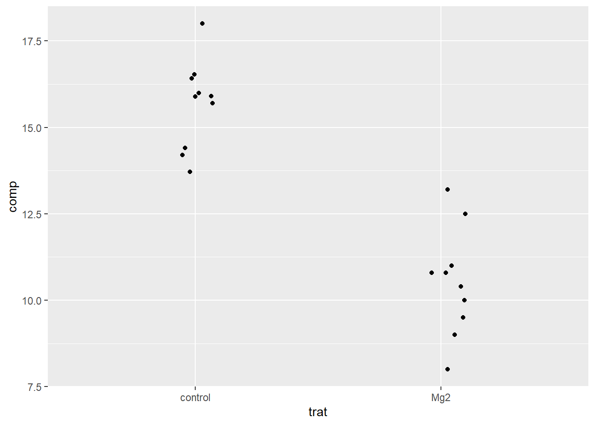

library(gsheet)
library(ggplot2)
library(ggthemes)
library(selectr)
library(tidyverse)analises_estatisticas
Análise Estatística no R
Carregamento de pacotes e importação de dados
Carregamento de pacotes
Carregaram-se os seguintes pacotes:
gsheet: importa dados diretamente do Google Sheets;ggplot2,ggthemes,ggpubr: para criar visualizações gráficas;tidyverse: inclui ferramentas para manipulação e análise de dados;selectr: facilita seleção de elementos.Esses pacotes fornecem as ferramentas básicas para importar, transformar e visualizar os dados.
Visualização inicial
A visualização com geom_jitter() serve como primeira exploração diagnóstica, permitindo identificar padrões gerais, possíveis outliers e a dispersão dos dados. Esta etapa é fundamental para orientar as escolhas de testes estatísticos subsequentes, pois revela visualmente se há indícios de diferenças entre grupos que merecem investigação formal.
dat_mg <- gsheet2tbl("https://docs.google.com/spreadsheets/d/1bq2N19DcZdtax2fQW9OHSGMR0X2__Z9T/edit?gid=983033137#gid=983033137")
dat_mg |>
ggplot(aes(trat, comp)) +
geom_jitter(width = 0.1)
Estatística Inferencial
Diferentemente da estatística descritiva, a estatística inferencial dedica-se à extrapolação de conclusões acerca de uma população maior, baseando-se em uma amostra de dados.
Este ramo utiliza métodos estatísticos para testar hipóteses e estimar parâmetros, possibilitando inferências sobre características da população a partir da análise de amostras.
Testes de Hipóteses: Os testes de hipóteses são procedimentos que permitem tomar decisões sobre a população com base em amostras de dados. Utilizam-se para determinar se um resultado observado em dados de amostra pode ser atribuído ao acaso ou se é estatisticamente significativo.
P-Valor (Valor de Probabilidade): O valor de p é uma medida que indica a probabilidade de observar os resultados encontrados, ou resultados mais extremos, sob a suposição de que a hipótese nula é verdadeira. Valores de p baixos (tipicamente menor que 0,05) sugerem que é improvável obter tais resultados por acaso, levando à rejeição da hipótese nula.
A principal diferença entre a estatística descritiva e estatística inferencial mais notável entre estes dois ramos reside na abordagem dos dados: enquanto a Estatística Descritiva concentra-se na descrição e síntese das características dos dados coletados, a Estatística Inferencial ocupa-se com a generalização dessas observações para populações maiores, permitindo a formulação de inferências e previsões.
Premissas
Todos os testes estatísticos têm premissas de base que precisam ser atendidas para que o teste forneça resultados válidos em relação ao parâmetro que está sendo calculado. Os testes estatísticos devem atender às premissas de normalidade e homocedasticidade.
Normalidade: A distribuição do conjunto de dados segue uma distribuição normal. Caso essa premissa não seja atendida, os dados devem ser trabalhados com testes não-paramétricos. A normalidade em testes estatísticos entre dois grupos pode ser calculada através do Shapiro-test.
Homocedasticidade: as variâncias entre os dois grupos estudados são homogêneas, ou seja, similares. Essa premissa pode ser calculada por teste de variância.
Teste de Hipótese entre dois grupos independentes
Dois grupos independentes podem ser formados de duas maneiras distintas: extraindo-se uma amostra da população A e outra amostra da população B; ou indivíduos da mesma população foram alocados aleatoriamente a um dos dois tratamentos em estudo.
Um exemplo típico de duas amostras independentes é quando temos um grupo experimental e um grupo controle.